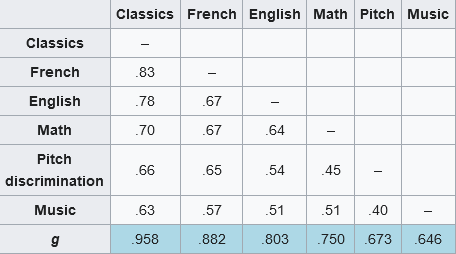
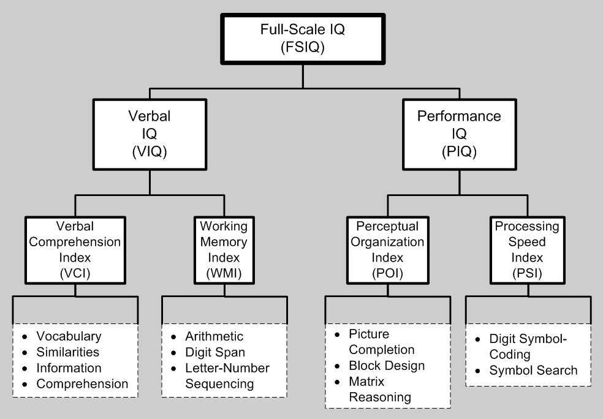
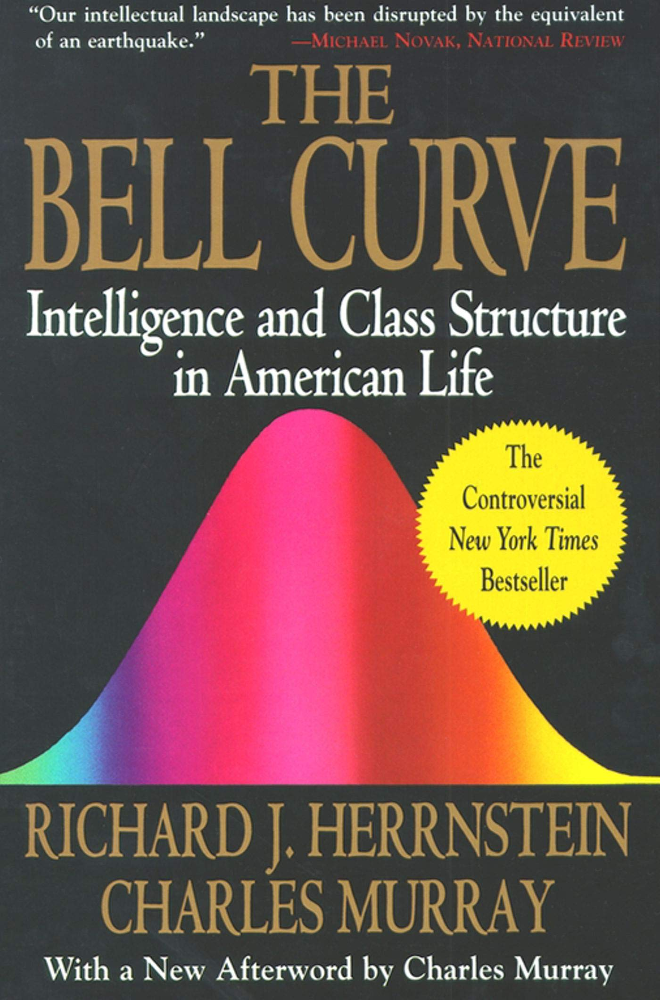

{% extends 'article_base.html' %}
{% block title %}Careerplanner | Erik Rahem{% endblock %}
{% block content %}
Careerplanner
Careerplanner.
Click here for the Careerplanner document.
Biomedicine is an example of what would've been good for me to study when I was younger, in order to be useful to the world.
I think you need to do honest benchmarks to gauge your true potential, revealing to be maybe better or worse than you expected. You also need to honestly predict your future skill before you decide to nurture it.


